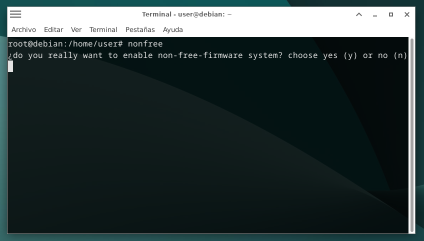
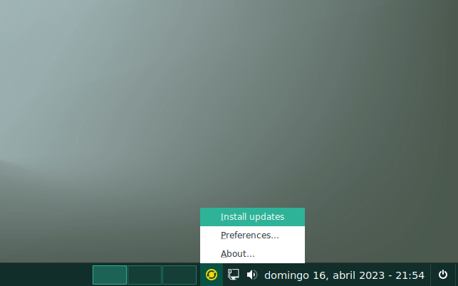

Auxtral
Auxtral es un proyecto cuyo principal objetivo es difundir el "software libre" y que el ussuario compruebe y juzgue por sí mismo sus virtudes y/o ventajas al igual que las del sistema operativo GNU / Linux, principalmente Debian, considerado por muchos como la mejor distribución de dicho SO.
Se compone de una cuidadosa selección de software sobre un "sistema base" Debian, diseñado especialmente para usuarios de otros sistemas operativos, principalmente propietarios o privativos, para que puedan experimentar al menos un acercamiento a GNU / Linux y al software libre en general.
Espero que les resulte una experiencia agradable navegar por las páginas de este sitio, así como interesante y productiva para quienes decidan descargar el ISO Auxtral 4 (Polaris Australiss) y probarlo. Muchas gracias.
Arq. Guillermo E. Sosa
San Nicolás
Provincia de Bs. AS.
Repùblica Argentina
Características
La política de Auxtral con respecto a las aplicaciones preinstaladas es tener solo las básicas de un SO, más las de administración del sistema propias del entorno de escritorio seleccionado por el usuario. Todos los paquetes de software de esta distribución son "software libre" y provienen principalmente de la sección "main" de los "repositorios oficiales de Debian Bookworm". Los de otro origen, se especifican bajo el título "II. De los paquetes de Otras Fuentes" en la página "Licencias" de este sitio web.
Software Preinstalado
Auxtral viene con solo el software básico necesario, a saber: Web Browser: Brave Browser; visor de imágenes: Mirage; terminal: las propias de cada Entorno de Escritorrio; reproductor de video: SM-Player; reproductor de música: Audacious; editor de texto: Pluma; administrador de particiones: GParted, salvo en la versión KDE-Plasma, que usa Parttition Manager; software de webcam: Cheese en Cinnamon, Xfce, Mate y Budgie, y Kmoso en KDE-Plasma; Gestor de Software: Mintinstall, flash USB: balena-Etcher, calculadora: Galculator, scanner: Simple Scan, y SkanLite en el caso de KDE-Plasma, y Gdebi como instalador de paquetes ".deb".
A esto se suman aplicaciones administrativas propias de cada entorno de escritorio. En el caso del "administrador de archivos", Budgie y Plasma vienen con "Nemo" en lugar de "nautilus y dolphin" respectivamente.
Vos vas a instalar las aplicaciones específicas según tus necesidades de software y el destino que desees darle a su PC, pudiendo elegir aplicaciones "libres" y/o "de código abierto" o bien "no libres". La libertad es tuya. La instalación es rápida y sencilla, pudiendo hacerlo desde los repositorios en línea de Debian o descargando los paquetes ".deb", "appimages", etc. Para obtener más detalles sobre la instalación de aplicaciones, visite esta página >> "Ayuda" del old site
Elección de Repositorios
Auxtral 4 (Polaris Australis), se instala por defecto con los repositorios "main" (libres), ya no en un todo de acuerdo con las "directrices de software libre de Debian" (DFSG) como en las 3 versiones anteriores, dado que en ellas se ha modificado el "puntto 5", al cual se le agrega al final el siguiente pàrrafo: "Los medios oficiales de Debian pueden incluir firmware que de otro modo no formaría parte del sistema Debian para permitir el uso de Debian con hardware que requiera dicho firmware". Obviamente refirìendose a firmware no libre.
Como se menciona en la "home" de este sitio, Auxtral va a mantenerse sin modificaciones en su instalador (Calamares) instalandose en principio solo con el componente "main" (libre) de los repositorios.
No obstante, el usuario final podra optar (igual que en las versiones 1, 2 y 3 de Auxtraal) si desea mantenerse en los repositorios libres o habilitar los "contrib" + "non-free" y "non-free-firmware", (+ el repositorio multimedia), ya sea por preferencia personal o por nesecidad, como en el caso de requerir un mayor rendimiento de su videocard, o en el caso de que requiera usar una conexion wiFI a intternet, mas aùn si usa una portàtil, donde a fuerza de ser sincero no es comùn que funcionen los firmwares libres. Para instalar tanto estos firmwares como los de tu videocard consultà las pàginas de "Ayuda".
Para habilitar los repositorios "contrib" + "non-free" y "non-free-firmware", puedes hacerlo desde un Terminal como usuario "root" ejecutando el comando (script) "nonfree". Esta acción primero te preguntará (en inglés) si realmente quieres pasar tu sistema a no-libre. Debes contestar por "sí" (y) o "no" (n) si contestas afirmativamente habilitará los repositorios mensionados y nuevamente te pedirá consentimiento para instalar nuevo software y hacer una actualización del sistema si las nubiese.
Pero: hasta aquí aún tienes tiempo de arrepentirte, se han habilitado los repositorios "no-libres" pero no se ha instalado ningún paquete.Cuidado, que la opción "por defecto" si das enter es "SI", por lo tanto si como dije te arrepentís a último momento pulsa "n", ningún paquete non-free se instalará. Pero el archivo /etc/apt/sources.list esta habilitado con los repos no libres. para volver, en la consola y antes que nada tipea "main". de esta forma el /etc/apt/sources.list volverá a habilitarse solo con los repos libres.
Vale aclarar que tomes la desición que tomes, lo haces por tu propia elección y voluntad. Como creador de Auxtral recomiendo mantenerse dentro del "software libre", por lo que debe considerase que desde esta página solo te pongo en conocimiento de las opciones que tienes, rechazando terminantemente el concepto de que "insto" a usar o instalar software "no libre" en tu PC.

Actualizaciones del Sistema
Un icono en la "Bandeja del sistema" te notificará si hay actualizaciones disponibles, cambiando el color original (verde o azúl según el "tema de íconos que estés usando), a amarillo o naranja de acuerdo con la importancia de las actualizaciones. Para instalarlas pulsa sobre él y desplázate hasta la entrada "install updates" del menú emergente y dale click.
Se abrirá una terminal y una ventana de autentificación que te pedirá tu contrasena "root", introdúsela y pulsa "enter". Se te mostrarán los paquetes a actualizar y te pedirá confirmación; pulsa nuevamente "enter" para actualizar o bién "n" para la negativa.
También puedes actualizar el sistema ingresando al "Menú de Aplicaciones" > "Sistema/Administración" > "Auxtral Updates"
Los "románticos" de la terminal pueden actualizar abriéndola, y como root ejecutar el script "upgr".
Ya no para románticos, sino "porfiados incorregibles" de la consola pueden actualizar con el comando que prefieran y no creo importante explicarlos (los conocen).
Nota: en caso de que actualices de esta última forma, o por ejemplo con Synaptic, luego de hacerlo ejecuten el script "osrx" en la consola, siempre como Superusuario.

Sobre aplicaciones GTK en KDE-Plasma
Es sabido que en los escritorios QT como KDE-Plasma las aplicaciones GTK no "leen" e imprimen en la pantalla los temas globales, lookandfeels ni color-schemes de este, por lo que al abrirlas se mostrarán con el tema default, generalmente Adwaita, mostrándose con un aspecto totalmente distinto al que pretendemos cuando seteamos el tema elegido para nuestro Plasma. Atento a esto y como vieron arriba en esta página (Software Preinstalado) está claro que Auxtral Plasma DE incorpora algunas aplicaciones GTK: Nemo, Pluma, Galculator, mintinstall, etc. Por esta razón, cuando elijas un "color-schemes" de los denominados "Polaris" para el aspecto de tu escritorio, deberás recurrir a la aplicación "lxappearance" (Inicio >> preferencias >> LXAppareance) y allí elegir el mismo tema GTK y el mismo tema de íconos que tu tema global o color-scheme de tu plasma.
En este video >> "Integracion total de Gtk2 y Gtk3 En KDE Plasma" Zatiel en su canal de youtube lo exolica muy bién.